Editor's Choice

Teclado Mecánico X90
¿Realmente vale la pena por su precio? Analizamos sus switches y latencia.
Puntaje: 9.5/10
Leer Reseña
“Calidad de construcción insuperable y latencia cero.”
“El sensor cumple, pero los materiales se sienten baratos.”
“Se despega solo y la aplicación es un desastre total.”
Los análisis más consultados por la comunidad este mes.
¿Realmente vale la pena por su precio? Analizamos sus switches y latencia.

Un sensor de gama alta en un cuerpo económico. Lo pusimos a prueba en Valorant.

Probamos la iluminación que todos usan en TikTok. ¿Es fácil de configurar?
Análisis detallados sobre switches, keycaps y software de personalización.

“El mejor formato 65% para presupuestos ajustados.”
Análisis de durabilidad y latencia en este teclado ultra-compacto.
Ver Reseña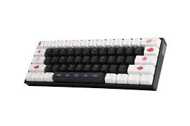
“Suaves como la seda, perfectos para escritura y gaming.”
Probamos los switches lineales en largas sesiones de juego.
Ver Reseña
“Iluminación espectacular, pero el software es mejorable.”
Revisión completa de la construcción y efectos de iluminación.
Ver Reseña
“Un tanque de guerra para tu escritorio. Calidad premium.”
¿Vale la pena la inversión? Lo comparamos con la competencia.
Ver ReseñaPeso, sensores y ergonomía: lo que realmente importa para tu puntería.
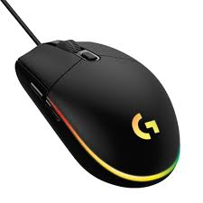
“Ligero y con un sensor que no falla nunca.”
Evaluamos su rendimiento en Flick-shots y seguimiento.
Ver Reseña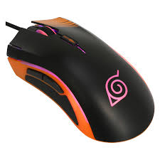
“Ergonomía perfecta para agarre de palma.”
Análisis de los botones laterales y la rueda de desplazamiento.
Ver Reseña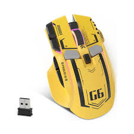
“Inalámbrico y sin lag apreciable. Una sorpresa.”
Prueba de duración de batería y estabilidad de conexión.
Ver ReseñaGadgets y accesorios para darle personalidad y funcionalidad a tu espacio.
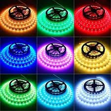
¿Se sincronizan bien con el monitor? Lo probamos.
Ver Análisis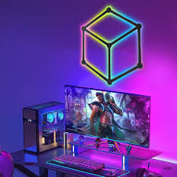
Montaje y efectos de luz paso a paso.
Ver Análisis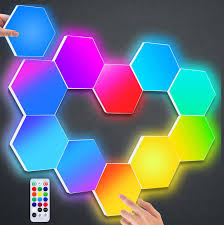
¿Realmente reduce la fatiga visual?
Ver Análisis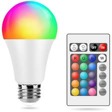
Reseña sobre su estabilidad y hub USB.
Ver Análisis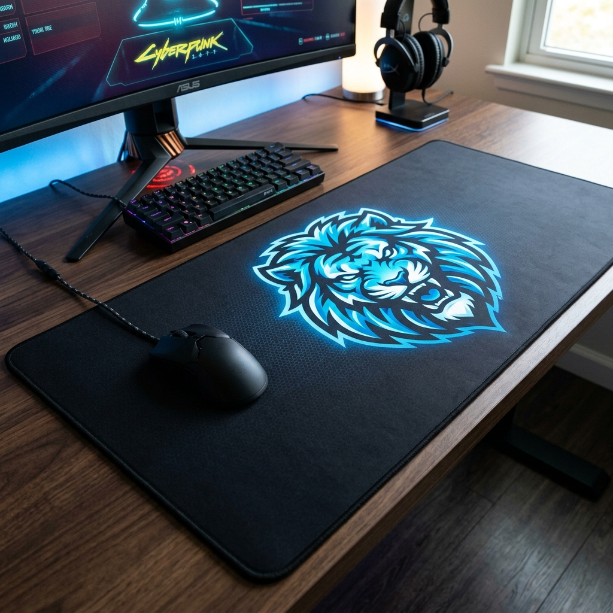
Control vs Velocidad: probamos su superficie.
Ver Reseña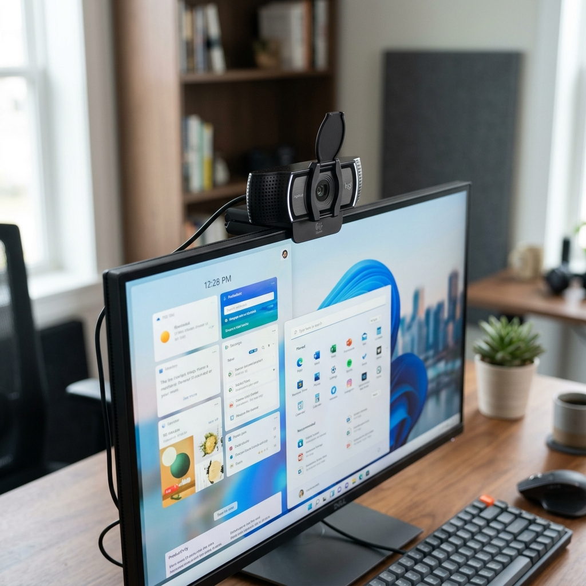
Calidad de imagen en condiciones de poca luz.
Ver Reseña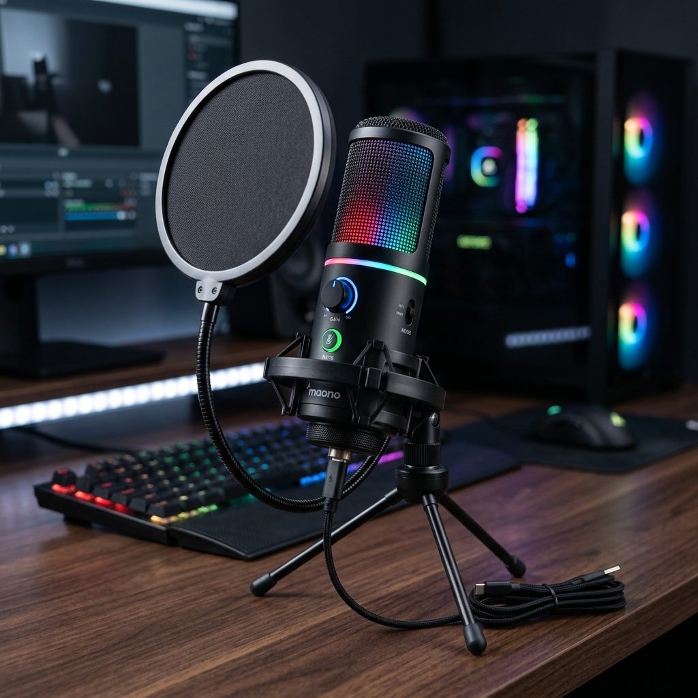
Prueba de audio: ¿Sirve para podcasting?
Ver ReseñaLo que dicen los usuarios reales sobre sus compras.
“El Titan Force Pro es, por lejos, el mejor teclado que he tenido. La respuesta táctil es instantánea y se siente súper robusto.”
— @GamerMaster99“El Nova Aim G1 tiene un sensor increíble, pero el cable es un poco rígido y el software de configuración es algo confuso.”
— @TechReviewer_“Decepcionado con el Kit DeskGlow. Los colores no coinciden con la app y el adhesivo es de muy mala calidad. No lo compren.”
— @UnhappyBuyer“El mercado de teclados mecánicos está saturado, pero nuestras pruebas ayudan a filtrar lo que realmente es calidad.”
— Alex G., Analista Senior“No necesitas gastar $150 en un mouse para tener un sensor preciso. Hay joyas ocultas que reseñamos aquí.”
— Maria F., Gamer Pro“La ergonomía es clave. Mis reseñas se enfocan en evitar lesiones tras horas de juego.”
— Dr. Tech, ErgonomistaAprende todo sobre periféricos antes de comprar. Actualizado semanalmente.
Switches rojos, azules o marrones? Te explicamos las diferencias y cuál es mejor para ti.
Leer Guía Completa
Desmitificamos los números altos de DPI y te enseñamos a configurar tu sensibilidad como un pro.
Leer Guía Completa
Cómo combinar luces RGB para que tu espacio no parezca un carnaval y se vea profesional.
Leer Guía CompletaSomos un equipo de entusiastas del hardware dedicados a probar y analizar los últimos periféricos del mercado. No vendemos productos, vendemos honestidad.